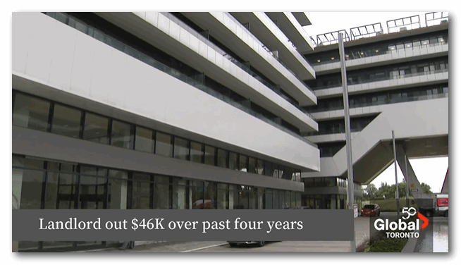

安省宾顿市的Narinder Singh说，他和妻子在怡陶碧谷买了一套公寓，作为退休后的投资。
Singh在布兰普顿的一家超市里经营干洗业务，他说:“我们几十年来一直在努力攒钱，为我们的养老做准备。”
但Singh表示，自2020年以来，住在这套公寓里的女租客只是断断续续地支付租金：他出示了一份账本，显示租客Deeqa Rafle欠下4.16万加元的租金和5249.35加元的未付水电费。
与此同时，她仍然住在Singh位于安大略湖西岸这套32层的公寓中。

Singh说，在她住在这个公寓的头九个月里，Rafle按时支付了每月2600加元的租金。然后，从2020年12月开始的七个月里，她一直拖欠着房租。
根据Singh的记录，她随后连续支付了19个月，但又有7个月没有再付款。
2021 年，Singh向安省房东和租客委员会请求允许驱逐租客Rafle。
Singh在接受采访时表示:“这个系统太糟糕了。”他对很难赶走不按时交房租的租客感到沮丧。
2023年，安省监察专员Paul Dube描述了房东和租客委员会“令人难以忍受的拖延”。
Dube在一份报告中承认，作为调查的一部分，他的办公室收到了4000多份投诉，其中大部分来自房东。Dube提出了61项建议，旨在改善委员会的运作。
5月，新闻报道另一对布兰普顿夫妇被租客欠了2.2万多加元，当他们想要搬回来住并要求租客搬出后，租客拒绝再支付任何费用。
在这种情况下，租户和室友自2023年10月以来没有支付过任何款项。安省的房东和租客委员会尚未就驱逐问题做出任何决定，另一场听证会定于 8 月底举行。
8月7日，Singh收到了他期盼的消息：房东和租客委员会成员Tiffany Ticky签署了一项命令，强制租客Rafle支付她欠下的全部租金和水电费。
“如果租户不支付撤销该命令所需的金额，则租户必须在2024年8月18日或之前搬出租赁单位。”
然而，Rafle仍然可以对这一决定提出上诉。即使她不这样做，Singh也需要要求法院执行办公室，也就是治安官来执行驱逐令。该机构也积压了不少案件。
Singh说，出租房子的经历给他留下了深刻的印象。他说，一旦租客搬走，他很可能会卖掉这套公寓，因为他再也不想出租了。
“我知道这个国家存在住房危机，但如果有人在这里滥用法律，那就自己去找房子吧，我不是保姆，我帮不了你。”
编译：YUAN
图片：资料图、视频截图